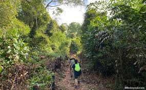
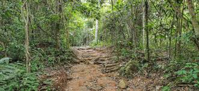

Pulau Ubin Tree Trail
This walking trail provides an “off the beaten track” experience across Pulau Ubin, a tiny island off the northeastern coast of Singapore and a delightful retreat from the hustle and bustle of city life. This island is home to Singapore’s last villages (orkampungs) as well as Chek Jawa Wetlands, a unique nature area housing some of Singapore's richest coastal and intertidal ecosystems.

Back to the top
chek Jawa Wetlands
This ecosystem is a confluence of six distinct habitats, including coastal forests, rocky beaches and a mangrove swamp. Keep your eyes peeled for fiddler crabs, red junglefowls and mudskippers, among many other wondrous creatures.
Back to the top
Puaka Hill
This hill is the highest point of Pulau Ubin at a height of 75 m, with breathtaking views of Ubin Quarry and sightings of Johor Strait and Malaysia. The hike up Puaka Hill only takes about 15 to 20 minutes to complete. The narrow trail winds through secondary forest and thick growths of wild ferns. There are 4 stations along the trail, each with a different view of the quarry and surrounding areas.
 Back to the top
Pulau Ubin Map
Back to the top